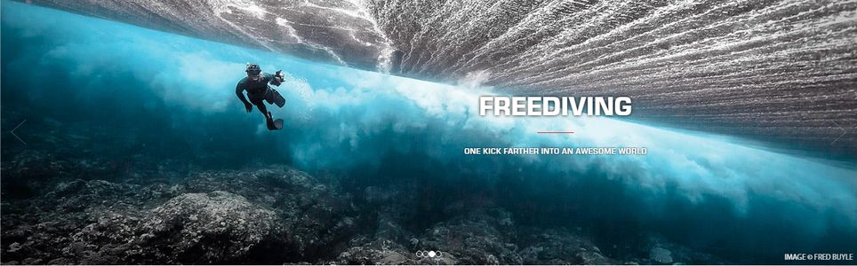

自由潛水教練 FDI

Level 1 自由潛水教練
你是否曾經夢想過像海豚一樣游泳? 或者想知道只靠着一口氣在海洋滑翔是什麼感覺? 如果是，你應該了解更多關於SSI自由潛水課程， 在課程中，你將學習以自己的節奏進行自由潛水。 完成教練培訓課程後, 你就可以成為SSI 基礎自由潛水教練， 或是泳池自由潛水教練或是 Level 1 自由潛水教練。
Level 2 自由潛水教練
Level 2 自由潛水教練為您提供攸關哺乳類動物潛水反射的更多知識，以及如何啟動最適用於自由潛水反射的刺激。 您將學習新的進階平壓技巧與閉氣訓練方法，帶領你超過20米，也發展自由潛水深達30米所需要的技巧。完成後， 您將成為SSI Level 2自由潛水教練。
Level 3 自由潛水教練
SSI Level 3 自由潛水教練將帶你到40米的深度。進行肺部加壓至低於肺餘容積的自由潛水試煉，這是專業的深潛課程，並將激發您的潛水專業知識， 以帶您進入深藍未知的大海。完成後，您將取得SSI Level 3 自由潛水教練。
【課程規劃】
- 教練班 Freedive Instructor Course (FITC) POOL/LV1/LV2 自潛教練 : 7-10天課程
舉例: LV1 教練要具備 LV2 學員的執照及須具備急救執照 React Right (SSI RR) 或效期內之醫生／護理師急救執照或 EMT2 執照 具備 SSI 自潛專長 Training Techniques (SSI SP-TT)
-
教練升等班
POOL 自潛教練升級至LV1或 LV2 自潛教練:3-6 天課程
LV2 自潛教練升級至 LV3 自潛教練:5-8 天課程
- 完成教練班 FITC 課程
- 高一階的學生執照。舉例:LV1 教練要具備 LV2 學員的執照
- 效期內之急救執照（認可急救執照如上）

【開課日期】
- 自由潛水教練 Level１:夏季課程，請來電與教練一同規劃專屬於您的教練課程
- 自由潛水教練 Level２:秋季課程，每年10-11月視情況開班！
- 自由潛水教練 Level３:特殊教練課程，只接受特別預定！
【超值學費】
- SSI 系統 全球領導級資料登入費用:6,000
- LV1 自潛教練班:39,000，教材費用 7,000 另計
-
自潛教練升級班:
POOL 自潛教練升級至 LV1 或 LV2 自潛教練:18,000，教材費用 4,000 另計
LV3 自潛教練班:30,000 -
相關專長課程
RR 5,500
TT 8,000 -
LV1教練班套裝
-
如果您是 LV1 自潛員, 原價 80,000 的學費，現金優惠價格為 69,800
包含:LV2 15,000 + RR 5,500 + TT 8,000 + 教練班 39,000 + 教材費 7,000 + 登陸費 6,000 -
如果您是 LV２ 自潛員, 原價 65,000 的學費, 現金優惠價格為 57,000
包含:RR 5,500 + TT 8,000 + 教練班 39,000 + 教材費 7,000 + 登陸費 6,000 - 如果您有 RR 同等執照，套裝現金優惠價格可再扣 4,000
- 當您取得 LV1 教練執照，將同時具有 TT + FIM 兩項專長教練執照
-
如果您是 LV1 自潛員, 原價 80,000 的學費，現金優惠價格為 69,800
【學前須知】
- iDiving 自潛教練班非保證班教學（註）。所有課程須於 2 個月內完成 (9 月後報名隔年 5 月前完成)。約定日期之更改須在 15 天前告知。 15 天內更動或未告知而曠課，補課需額外負擔 1,000 元，身體不適，出示醫院掛號收據者不收。
- 若學員自行放棄課程，本訓練中心將不予退費；但因身體不適且經醫生證明不宜從事潛水活動者，繳交之訓練費用在扣除已支付的成本後，餘額將全數退還。
- 課程之訓練費用、器材之購買費用與 2 吋大頭照一張，請於術科前繳齊。
- 海洋實習地點為東北角或各移地結訓地，往返之交通請自行處理。
- 學員結訓後，訓練中心將於兩週內完成 SSI 國際數位潛水證照申請。（如有急需請先告知，本中心可於課程完成後的兩個工作天內完成申請）